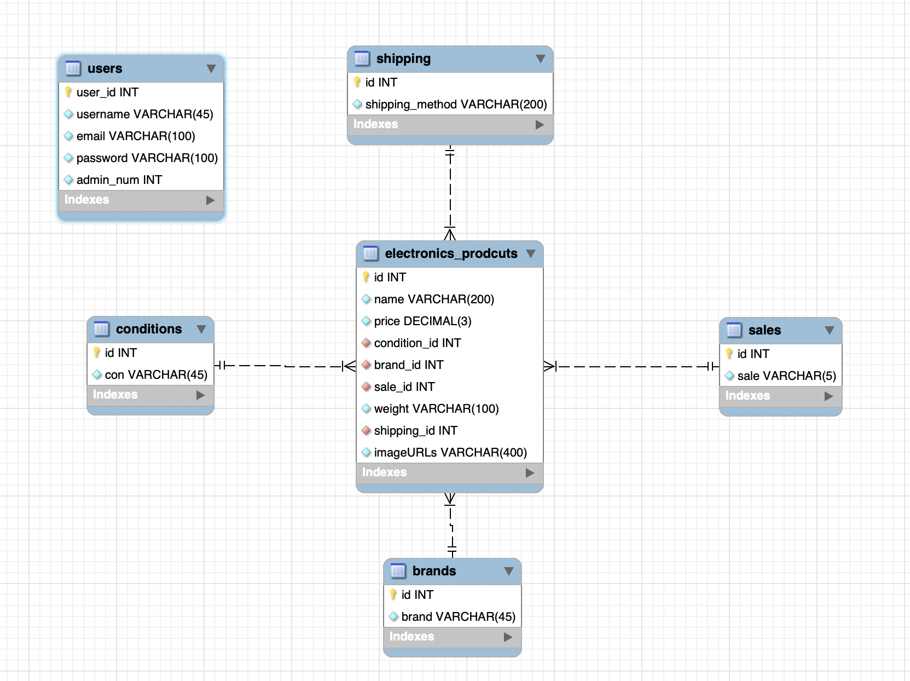

Topic & Purpose
This website is dedicated to a theoretical electronics e-commerce company WiseChoice and serves the purpose of product listing for the company, facing both registered and non registered users, and administrators of the company. This site gives insights into electronic products’ information for the users and offers an easily manageable database for administrators.
Instructions
user database & credentials:
There are 3 pre-assigned admin accounts, you can use these to check my work
3 user access level:
For users that are not logged in, they can access the home page (index.php), preference filter page(filter.php), the product listing page(listing.php), and detail page about each product (detail_image.php), with limitations.
For logged in users, they can access the home page (index.php), preference filter page(filter.php), and the product listing page(listing.php), without limitations.
For administrators, they can access the home page (index.php), admin searching page (admin_search.php), admin product listing page(admin_listing.php), editing page(edit.php), delete page(delete_product.php), and add page(add_product.php), with some variations.
Operations:
Data Source
Database Diagram
Extras